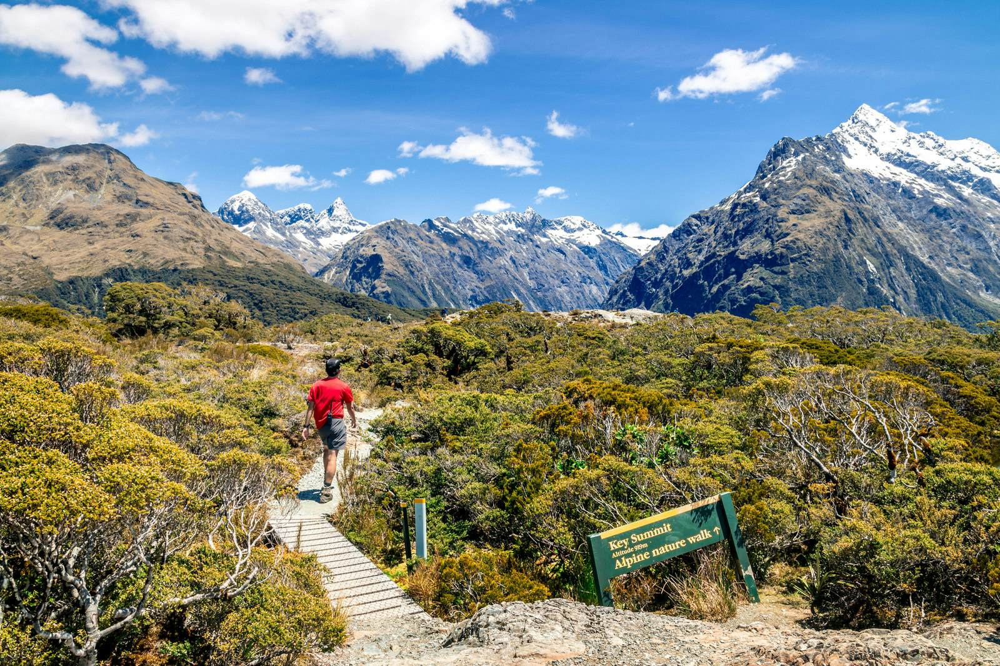

Активный отдых
Новая Зеландия
Новая Зеландия - идеальное место для активного отдыха, предлагающее невероятное разнообразие приключений на фоне потрясающих пейзажей: горы, фьорды, вулканы, леса и побережья.
Треккинг — основа активного отдыха в Новой Зеландии. Легендарные "Великие прогулки" (Great Walks) вроде Маршрута Милфорд-Саунд или Тонгариро Норт-Серкьют, а также множество других троп разной сложности ведут к самым красивым уголкам страны.
Для адреналина Новая Зеландия - родина банджи-джампинга (мост Каварау, каньон Невис). Также популярны рафтинг по бурным рекам, уникальный блэк-уотер-рафтинг в пещерах Вайтомо, зиплайнинг, полеты на параплане, парашюте и вертолете.
Водные виды включают серфинг (Раглан), каякинг в море (Абель-Тасман) и на озерах, дайвинг (Бедные Рыцари), кайтсерфинг. Зимой горнолыжные курорты Южного острова (Ремакаблс, Короне-Пик) и Северного (Туроа, Вакапапа) привлекают лыжников и сноубордистов.
Непал
Непал - Мекка активного туризма, предлагающая невероятное разнообразие приключений на фоне Гималаев, от тропиков до вечных снегов.
Треккинг – основа: от легких прогулок до сложных маршрутов к базовым лагерям Эвереста или Аннапурны, через перевалы и живописные деревни. Альпинисты штурмуют восьмитысячники (Эверест) или техничные пики (Айленд Пик), требующие серьезной подготовки.
Бурные реки (Трисули, Сун-Коси) манят рафтингом и каякингом всех уровней – от спокойного сплава до экстремального адреналина. Исследуйте страну на джипах по высокогорным дорогам (в Ло-Мантанг) или на горных велосипедах по долинам и трейлам.
Экстрим включает банджи-джампинг с высоких мостов, каньонинг, параглайдинг над Покхарой и сафари (джипы, слоны, каноэ) в джунглях Читвана в поисках диких животных.
Лучшие сезоны – весна (март-май) и осень (октябрь-ноябрь). Зима холодная, летом муссоны усложняют передвижение. Непал найдет приключение для любого уровня подготовки.
Коста-Рика
Коста-Рика – рай для любителей природы и активного отдыха, где главные сцены разворачиваются среди влажных тропических лесов, вулканов, водопадов и двух океанских побережий.
Пешие приключения – основа: треккинг по бесчисленным национальным паркам (Мануэль Антонио, Корковадо, Тортугеро) для наблюдения за обезьянами, ленивцами, тропическими птицами. Восхождения к кратерам действующих (Ареналь, Поас) и потухших (Ирасу) вулканов открывают фантастические виды. Прогулка по подвесным мостам в облачных лесах Монтеверде – обязательный пункт.
Водные виды царят здесь. Рафтинг и каякинг по бурным рекам (Пакуаре, Ревентасон) в джунглях или спокойные прогулки на каяках по мангровым зарослям и каналам Тортугеро, где можно увидеть кайманов и птиц. Сноркелинг и дайвинг с морскими черепахами, скатами и разноцветными рыбами доступны на обоих побережья (Кауита, Каталина).
Лучшее время для посещения - сухой сезон (с декабря по апрель) с минимумом дождей. "Зеленый сезон" (май-ноябрь) дождлив, но природа пышнее, цены ниже, а ливни обычно короткие. Коста-Рика предлагает уникальный микс приключений на земле, в воде и воздухе, погружая в сердце тропической природы.